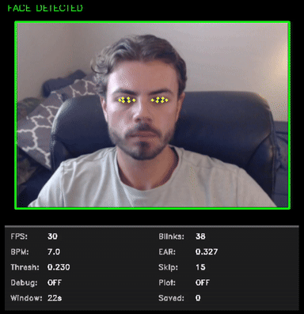

Original build
The desktop version paired YOLOv8 person detection with MediaPipe Face Mesh, OpenCV video, a 60-second blink window, and optional Matplotlib plots.
Project 01
A real-time vision tool that estimates eye openness, detects blink events, and tracks blinks per minute. The original desktop application used YOLOv8 and MediaPipe; this port runs facial landmarks directly in the browser.
Live browser demo
The camera feed and landmark processing stay in your browser. No frames are uploaded by this page.

Detection logic
The desktop version paired YOLOv8 person detection with MediaPipe Face Mesh, OpenCV video, a 60-second blink window, and optional Matplotlib plots.
The port removes the redundant person detector and uses MediaPipe Face Landmarker directly. It calibrates the threshold from the visitor’s open-eye baseline.
Lighting, glasses, camera angle, and deliberate squinting can affect EAR. This is an engineering demonstration, not a medical measurement.
Read the source ↗